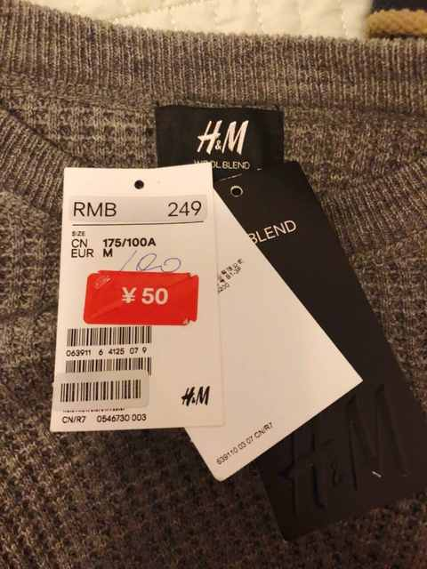
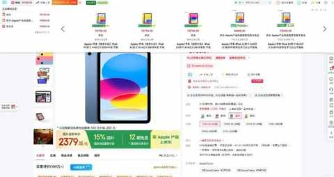
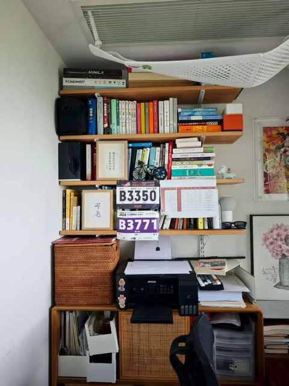
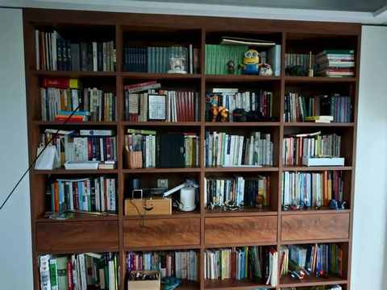
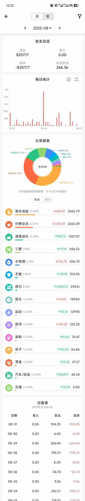

从看见到接纳：90年农村出生的我，决定与 “补偿心理” 和解
一、无意识的 “补偿性消费”
人作为社会性动物，很难不受环境和家庭的影响，从小到大总会有一些需求，因为当时的一些限制条件而未被满足，或主观或客观。
天生迟钝的我，是在工作多年后才发现，有一些行为和表现是以往经历的投射，在某个阶段会表现出来，这一阶段也无法逾越。
当时的具体表现是： 逛超市必买饼干
刚毕业的时候，和同学一起合租小区对面有一个家乐福，每周都会和同学饭后一起去逛逛。
逛的次数多了之后就不是买很多大包小包的了，基本是逛一圈下来，大家会买点需要的小东西，有一次一起把东西拎回去盘点的时候，同学一语道破：“你怎么又买了饼干！”。
超市的零食区有各式各样的零食，但我买的基本每次都买的是饼干：威化饼、康师傅 3+2、达能系列是买的最多的几种。
买饼干的行为是接近无意识的，可能是小孩是爱吃饼干但吃到的机会少，逐渐有了补偿心理，工作后有经济自主权之后有了对应的补偿性消费。
二、 补偿心理驱动下的消费决策
① 喜欢逛且爱看价签
初到大城市，逛逛衣服鞋帽店总是难免的。在逛的过程中总会习惯性的先价签，即使是完全没有意向买的商品也会拿起来看看价签。

虽然刚毕业的时候工资才 4000 多，但也不至于一双鞋或一件衣服买不起，而且在进店之前也对品牌所处的价位有所预期。
按照正常的步骤，看价签应该第 4 个步骤再做的事情。
因为进到某一个店里之后，一般会大致浏览下，有觉得不错的再感受下细节，接着才是拿起来看看价签，而不是看到一个商品就看价签然后快速离场奔赴下一个店。
可能从小和爸妈一起逛商店的时候被耳濡目染到，不觉得看价签的时机不太对，毕竟我们不是市场调研人员，不是来调研商品价格的。
我们的需求应该是第一位的，进店是来看看有没有适合我们商品的，遇到适合的喜欢的再看看价格能否接受。
② 过于在意性价比
在网上买各种东西都要去比价，浏览器里面安装了数个比价插件，打开商品链接之后就有价格趋势的显示。

除了比价，还有一个表现是会花很多时间在买一个小东西上面：领取优惠券、满减、凑单……
一顿操作猛于虎，最终花了半小时一小时的，只便宜几毛钱，顺带着还买了一些暂不需要的东西，最终的结果是：既浪费时间又浪费钱！
③ 喜欢买买买


- 买了挺多书，把家里的书柜墙都塞满
- 买了很多笔，有一些超过 5 年的都写不出字
- 买了不少本子，塑封都还在
- ……
当好奇心与购买欲交织在一起，就会在某个时期不断的买买买，每天都有几个快递需要拆，小区里面的快递员几乎都认识我，他们喊我”大壮”，在小区里面遇到还会打个招呼。
三、接纳是一个过程
补偿心理没有多不好，在自我接纳的过程中，打从心里希望自己能在大部分时候都是在做理性的消费决策，而不至于频繁出现买完什么东西懊恼的情况。
① 必须顺势而为
不能一味压抑自身的购买欲，适度的买买买也能降低冲动消费的概率。
不妨试试下面两个方法：
1）饭后再去超市
吃饱之后，看到很多商品的时候能更理性的做决策，花和之前类似的时间，但你买回来的东西大多就都是必需品
2）直播间脱敏
在某段时间频繁刷直播间，最好 1-2 周每天刷个一小时以上，充分熟悉直播间的套路和商品类型，能大大降低冲动消费的频次
② 看体验或测评内容
很多时候我们需要的是拥有的感觉，下单成功那一刻往往是最有满足感的，但人不可能买下所有他想要的东西。
不过，各种自媒体博主可以做到！他们的内容能很好的辅助你做消费决策。
必须要强调的是：要各种类型的博主都看看，兼听则明。
③ 每日记账
记录每一笔开支，是每一笔，即使是外卖满减后的 0.01 元。

通过记账，能对自身的消费建立起具体而深入的认知，从而做到该省省该花花。
四、和解的目的
和解不是能简简单单做到的事情，和解过程是一个自我发现之旅，在过程中更了解自己，能区分哪些需求是多年前的，哪些是当下的，哪些是始终未变的。
最终的目的，是为了让我成为我！